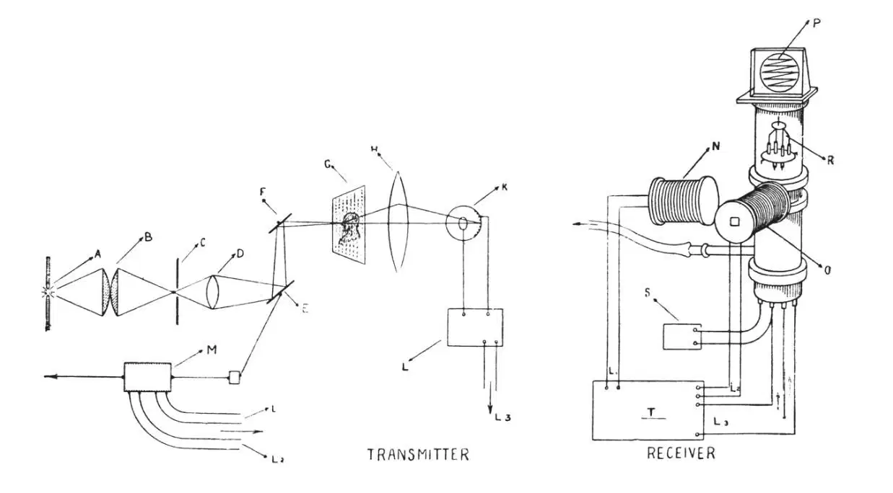
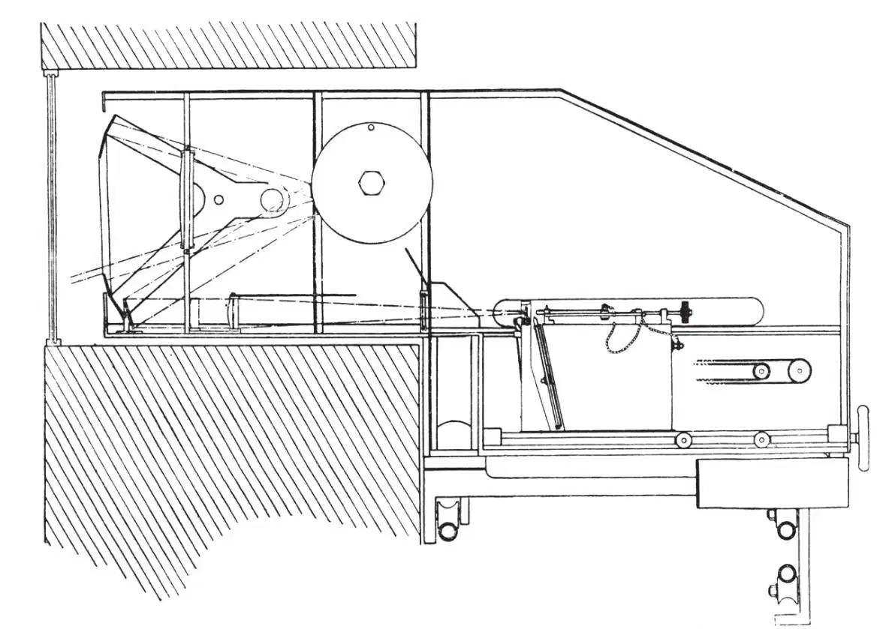
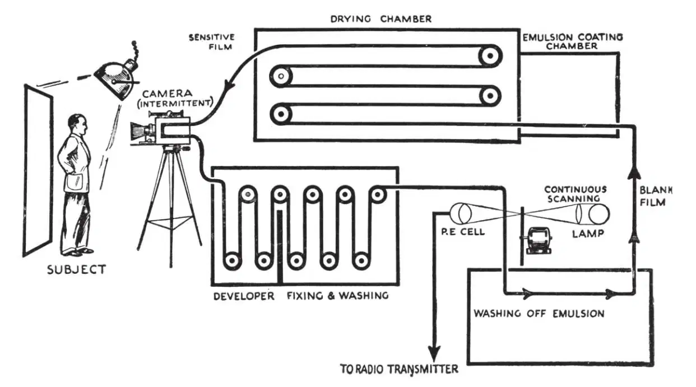

英文
英文阿奇博尔德·丘奇
编者按
欧洲和美洲的公司在电视技术的研制方面正在展开竞争。正如阿奇博尔德·丘奇在这篇评论文章中所说的：当约翰·贝尔德在1926年首次向公众演示那些模糊和闪烁的电视图像时，人们普遍对此持怀疑态度，但现在这项技术正如火如荼地发展着。1932年，有人把德比马赛拍摄下来并实时传送给伦敦的观众；而且英国广播公司也已经安装了贝尔德电视有限公司的转播设备。现在工程师们正在想办法把阴极射线投射到荧光屏上以改善图像的质量，并使现场直播成为可能。这需要有较高的屏幕分辨率，而且还需要在广播频带中为电视信号安插一定的位置。 英文
电视技术的所有发展都是最近涌现出来的。从约翰·贝尔德第一次获得简单静态物体，例如马尔他十字形的电视图像到现在还不到10年时间。在1926年1月27日，贝尔德第一次演示了“真正”的电视，这个装置可以即时接收到运动物体的光学图像，图像的传输是通过电流的变化实现的。很多科学工作者和媒体人士都出席了这次演示会，虽然他们被这项成就深深震撼，但仍坦言对电视是否能成为娱乐业的媒介之一或是否能被应用于其他商业用途持怀疑态度。尽管人们可以分辨出接收到的图像，但比较模糊而且忽隐忽现，所以许多科学工作者认为，电视的发展不可能通过机械式的传送和接收系统来实现。尽管其他的科学观察者对机械系统的反对不那么强烈，但也不相信可以这样来实现电视的转播，因为电视图像要是能与电影院屏幕上播放的图像一样清晰，就需要有很宽的频率范围。这个提法对电视的发展更为致命，因为它不仅否定了贝尔德在获得初步成功时所应用的机械手段，也否定了将来有可能应用于电视技术的其他手段，如阴极射线。 英文
在贝尔德1927年首次在利兹向英国科学促进会成员展示电视的时候，这套设备仅仅做了很小的改动。在1926年时，人们用一组功率很高的电灯照射要被电视转播的物体。在光电管和被照射的物体之间有一个扫描设备，扫描设备是一个圆盘，在圆盘的周边沿螺线每隔一定间隔排列着30个小孔，圆盘每秒转5圈。一个旋转的光学元件一条一条地扫描要被电视转播的物体，每一条信息都会按顺序传递到一个光敏元件——光电管上。光电管中电流强度的变化会改变位于接收端的氖灯的亮度，且这个不断变化的单光源被一个与发送端扫描圆盘同步的“尼普科夫”盘（译者注：以德国发明家保罗·尼普科夫命名，尼普科夫发明螺盘旋转扫描器，用光电管把图像的序列光点转变为电脉冲，实现了最原始的电视传输和显示。）依次扫描。重新组合而成的图像面积为2平方英寸，我们可以通过扫描圆盘观察氖灯看到这个图像。同步的产生是由同步电机实现的。 英文
在利兹演示的时候，贝尔德使用了“红外线电视”，即为了避免被转播的人被灯光眩射，在人与灯之间隔了一层硬质橡胶。另一个显著的改进是贝尔德发明的光点扫描法。他在自己的专利中是这样写的：“用一束光扫过要传输的场景或物体，把光敏元件放置在这束照射到物体上又被反射回来的光能够经过的位置上。”这实际上是泛光照明法的一种倒置，它的优点是：可以大大增加所得信号的强度，因而可以适当减少照射到被电视转播的物体上的光亮度。 英文
在国外，美国的贝尔电话公司很快就开始应用这种方法通过一个电路在纽约和华盛顿之间实现了电视传输。同一年，也就是1927年，贝林和霍尔威克使用阴极射线示波器（图1）成功地传送了轮廓线和影像图。在贝氏成功的激励下，好几个国家都开始开展电视方面的研究，英、美、德、法的大量专利记录可以证明这一点。 英文

图1．贝林和霍尔威克所用电视设备的示意图 英文
1928年2月9日，贝尔德第一个实现了在大西洋两岸传送电视信号的目标。在距离纽约几英里远的哈茨戴尔镇，一个业余操作员当着路透社代理人的面接收了电视信号，他用实验接收设备在一个毛玻璃屏上显示出了大小约3平方英寸的图像。贝尔德很快又将伦敦的电视信号传送到航行在大洋中央的伯伦加莉亚号船上。该船的首席工程师说：“图像的清晰度不太稳定，但可以很清楚地看到运动变化，图片在清晰的时候是准确无误的。”转播使用的波长为45米。第二年，使用光点传输法和带有可实现图像重建的圆盘的阴极辉光灯，贝尔德在英国科学促进会于开普敦召开的会议上按照工程学的模式进行了演示，英国广播公司（BBC）同意为在伦敦BBC的发射机上使用贝氏系统进行一系列的实验性电视转播提供设备。同时，贝尔德还研制出实时播送新闻广播节目的语音以及用电报传输字符、语言和其他内容的方式，类似这样的传输构成了实验性转播中的主要特征。 英文
1930年7月，贝尔德公司在一家剧院进行了首场公开演示，艺术家的现场表演和电影胶片从位于伦敦W.C.2区朗埃克的演播室中被传送出去，并重现在伦敦剧院舞台上的一个多管灯屏幕上。同一年，年轻的冯阿登爵士在德国开始了他对电视的研究，他采用自己研制的、专用于传送和接收电视图像的阴极射线示波管，在不到一年的时间里，他就因第一个向公众展示能与机械式接收系统性能相媲美的阴极射线接收器而声名卓著。起初，冯阿登接收的是通过机械手段传送的图像，但是后来他利用一个速度可变、强度不变的阴极电子流来代替速度不变、强度变化的电流，这样就使他的阴极射线管既能传送图像又能接收图像了。 英文
与此同时，对阴极射线电视的研究吸引了许多在美国无线电公司及其联营企业，主要是飞歌公司和其他美国公司，以及在德国柏林电视机股份公司工作的科学工作者们的注意，在柏林电视机股份公司中，贝尔德公司与博世公司、蔡司伊康公司以及洛伊公司的股权地位相当。洛伊公司是冯阿登专利的主要拥有者。柏林电视机股份公司的实验室在研制阴极射线电视时采用的是“硬”管，即压力低于10－5 mm的管子，与之相反洛伊公司使用的是“软”管，“硬”管所具有的优势是寿命长，而寿命是人们主要考虑的因素。 英文
然而，机械方法的支持者丝毫没有因阴极射线管所取得的成功而感到沮丧。贝尔德公司在发送端用镜面鼓代替尼普科夫圆盘，在接收端或者用一个直接被调制的弧光灯或者用克尔盒与一个镜面鼓联用，这样就能把很亮的图像投射到一个大小约6英尺×2英尺的屏幕上，并且贝尔德公司在英国科学促进会于伦敦召开的成立百周年纪念大会上的以“机械手段辅助学习”为主题的展览中演示了他们的成果。1931年1月，在贝尔德位于朗埃克的三段式电视实验室中，他们又演示了一次他们的成果，用3个30线的镜面鼓得到了持续时间较长的图像。在同一月的稍晚些时候，留声机有限公司在物理和光学学会于伦敦举办的展览上进行了类似的演示，他们用多通道方式传送电影胶片上的信息，并通过克尔盒和镜面鼓把重新生成的图像投射到一个半透明的屏幕上。同一年，贝氏方法被用于转播德比马赛。 英文
1932年发生了5件对电视业发展影响重大的事情。德国人为了应用贝尔德的技术组建了柏林电视机股份公司，公司为广播电台设于罗马的意大利办事处安装了一整套电视转播设备；贝尔德公司通过电视转播把德比马赛的现场实时地传送到了伦敦电影院的大屏幕上；英国广播公司也安装了由贝尔德电视有限公司设计的电视转播设备，以用于其伦敦演播室的定期转播（图2）；贝尔德公司还设计了一种更先进的家用电视接收设备并投放到市场中，在这种新设备中，原来用于把接收图像投射到半透明屏幕上的尼普科夫圆盘和老式氖管被镜面鼓和克尔盒的组合体所取代；美国通用电气公司的亚历山德森博士成功地利用光束发送和接收到了电视图像，他所用的设备和方法与马可尼公司在英国科学促进会最近于莱斯特召开的会议上所作的演示类似。 英文

图2．安装在英国广播公司伦敦广播大楼内演播室中的电视发射机的截面图 英文
今年，所有对电视商业开发感兴趣的公司和来自不同国家的大批独立研究者都表现出了很高的研究热情。大家对阴极射线示波器进行了大量有趣和富有创造力的改进。柏林电视机股份公司制造出了末端发荧光的管子，其直径可达2英尺。冯阿登设计了一种可以把从管内一个板上发射出来的阴极射线束投射到外部屏幕上的方法。冯米哈伊开发了一套机械系统，在该系统中接收器中的调制光被一个旋转的小镜子扫过，小镜子位于一个静止圆筒的轴线上，正对着固定在圆筒内表面上的许多镜子，他宣称这套系统优于旋转的镜面鼓。柏林电视机股份公司的实验室还造出了非常精确的镜面螺旋，在螺旋轴上装有90和120个不锈钢的反射面。美国研发工程师维拉蒂米尔·斯福罗金惊人地宣布他设计出一种他所谓的光电摄像管，该管由两部分组成，一个是透镜系统把场景聚焦在其上的嵌镶光电阴极；另一个是向嵌镶光电阴极发射电子束的阴极射线枪。要转播的场景被聚焦到大小约4英寸×5英寸的信号板上，信号板表面有数以百万计的小光电管，每个光电管都包含一个被铯敏化的，易于感光的小银球。这些小球被置于一块绝缘板上，譬如薄的云母片上，在其背面涂有一层金属因而可以导电。电子枪与嵌镶光电阴极被放在同一个玻璃泡内，在与普通阴极射线管相同的偏转线圈的作用下，电子枪发射的电子束水平和垂直地扫过嵌镶光电阴极。一旦一个电子打在了光电管上，它就会中和对应聚光器上的部分电荷。这种放电电流被采集、放大并发送到接收端的阴极射线束上，这些阴极射线束随着扫描束同时移动到另一侧的荧光屏上。不断变化的放电电流使接收端的阴极射线束被调制，因而也调制了接收端的屏幕。据报道，渥太华自治领天文台的台长弗朗西斯·亨罗托博士也发明了一种类似的设备，他把自己的发明称作“超级眼”。如果这些设计都能付诸实践，那么在电视领域就将出现具有重大意义的革新。 英文
人们在过去的两年中一直认为：为了使电视得到普及，就必须研制出图像清晰度高于已有的30线标准、画面比例为2.4:1的电视。事实可能是这样，也可能不是这样，但我们应该清楚现在的真实情况。首先，很容易证明（实际上已经有人提出过）当带宽为10千赫时，一个频道的信息–时间传输特性（为了使闪烁最小化，应达到一个合理的图像速率，如每秒12.5次）采取这样的线数和比率最为经济。 英文
目前，利用今年研制出的阴极射线接收设备所得到的图像的质量明显优于机械式接收设备重组而成的30线图像。贝尔德公司在英国科学促进会今年在莱斯特召开的会议上首次公开展示了这种质量的图像，洛伊公司、柏林电视机股份公司等其他公司在柏林无线电展览上也展示了同样的产品，包含120～240个扫描带，正常传输所需的边带带宽为150千赫到1,000千赫。因为日内瓦公约中没有任何一个条款在广播波段中为电视业的合理扩张和发展预留出一定的波长区，所以人们不得不想办法开发全新的无线电技术。在局部地区使用超短波无线电发射机似乎是一个理想的解决办法。然而，在实践中应用这种方法时遇到了很多困难，其中之一是许多地方因建筑物、钢结构、树木和地平面以上的高地等导致了屏蔽效应。目前人们正在进行这方面的研究；实际上在伦敦，人们已经开始试验用短波传输高质量的图像（即清晰度达到120线或更高的图像），为此目的用上了水晶宫的双塔。但要在全国范围内建立这样的服务恐怕还需要一两年。与此同时又出现了许多与放大器失真有关的问题，虽然奥利弗·赫维赛德对通信工程中的基础电学失真原理进行了可靠的研究，但他的研究成果在实践中的可信度太低，因而对解决这个问题无能为力。如果扩大一个放大器的带通，那么特纳在电气工程师学会的就职演说中提到的“温度效应”就会成为决定系统受干扰程度的一个重要因素；更因为在一幅图中扫描带数量的增加会使照射到光敏元件上的光以幂函数的形式迅速下降。与胶片播放不同，我们需要对实际场景的转播定向进行更加细致的研究。为了给电影院或其他场所的广大观众放映电视图像，柏林电视机股份公司最近展示了“中间胶片”的使用方法（图3）。在这个过程中，电视图像被传送到一个电影胶片上，然后被冲洗并通过一个普通的电影放映机播放出来，如果使用的是普通胶卷，则接收和放映过程大约需要6秒，如果使用循环胶卷，则所需的时间约为20秒，“片基”首先被乳化和干燥，接着进入接收端的扫描设备，然后冲洗、放映和去乳化。尽管这种方法具有广阔的前景，但仍有很多更进一步的工作需要做。 英文

图3．柏林电视机股份公司利用中间胶片法传送电视节目所用装置的示意图 英文
（刘霞 翻译；赵见高 审稿）
* 这篇论文曾在英国科学促进会A分会（数学和物理学分会）于9月13日在莱斯特举行的会议上被宣读过。